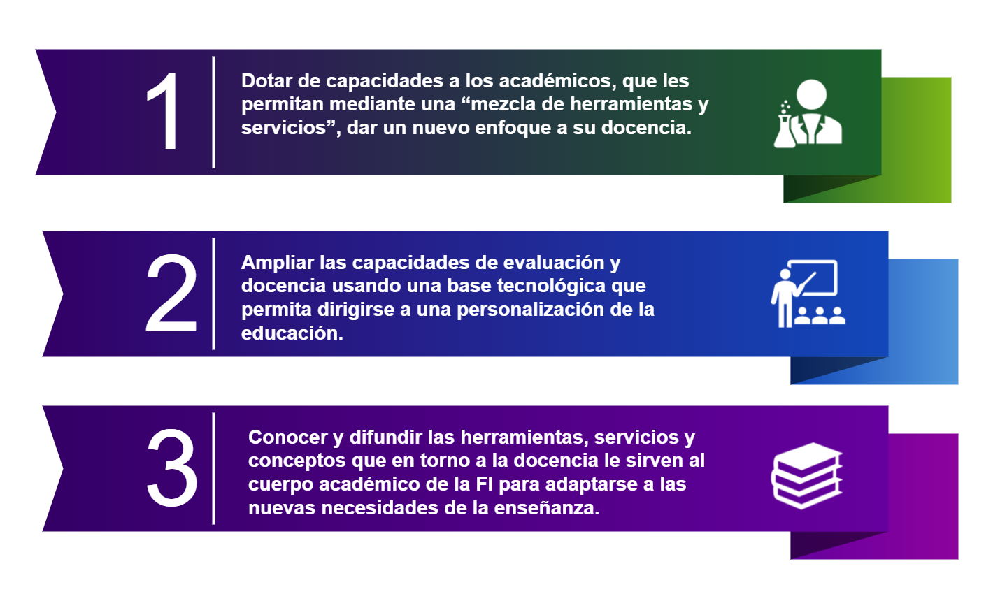
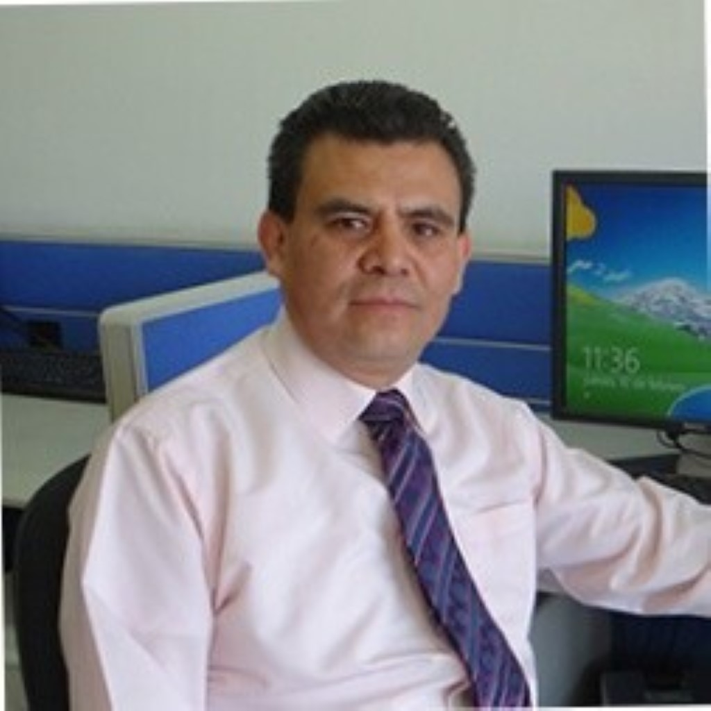
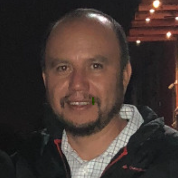
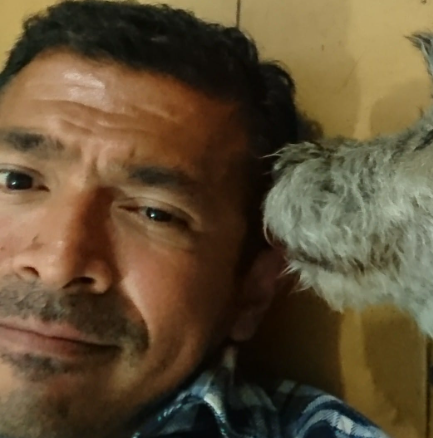
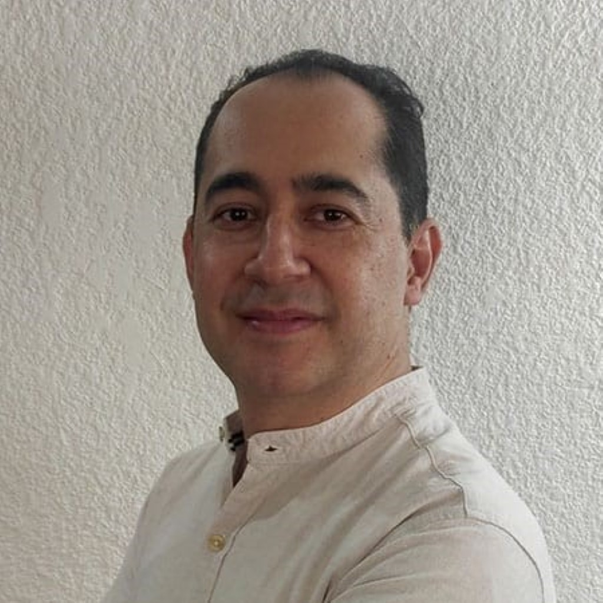
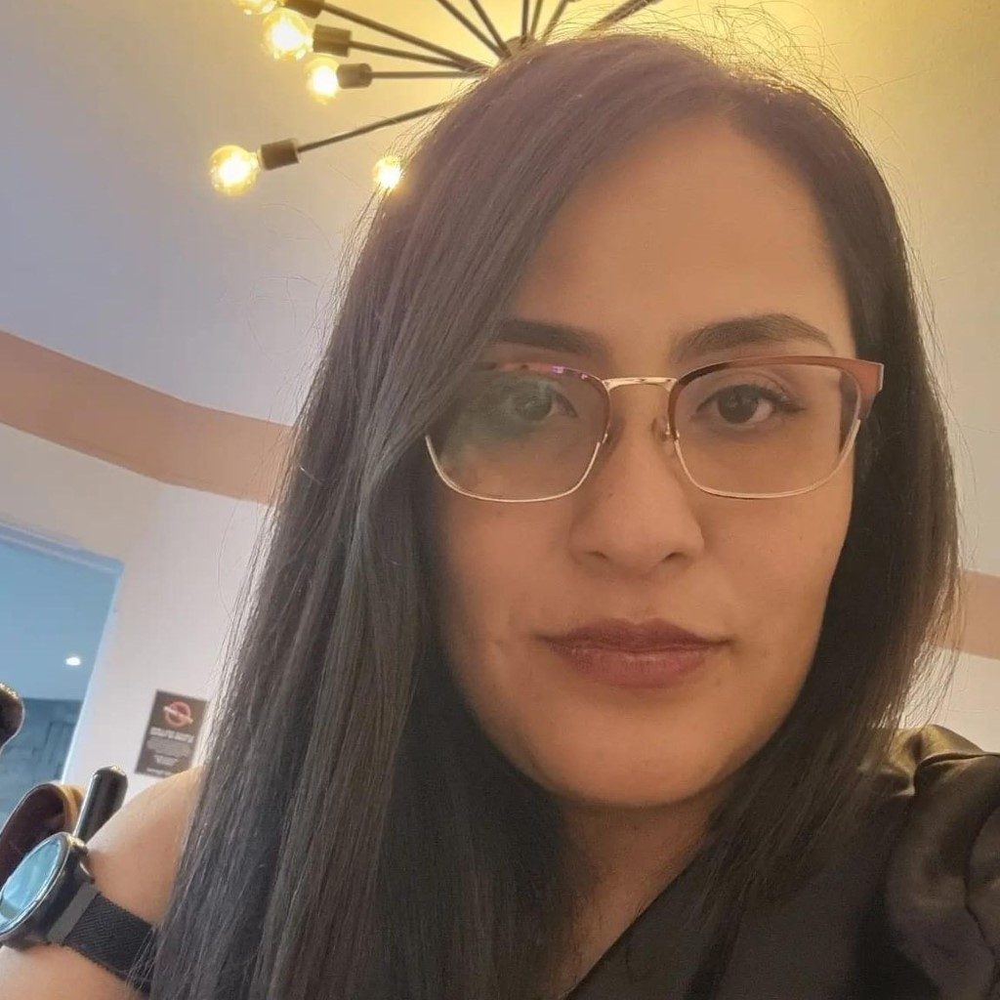
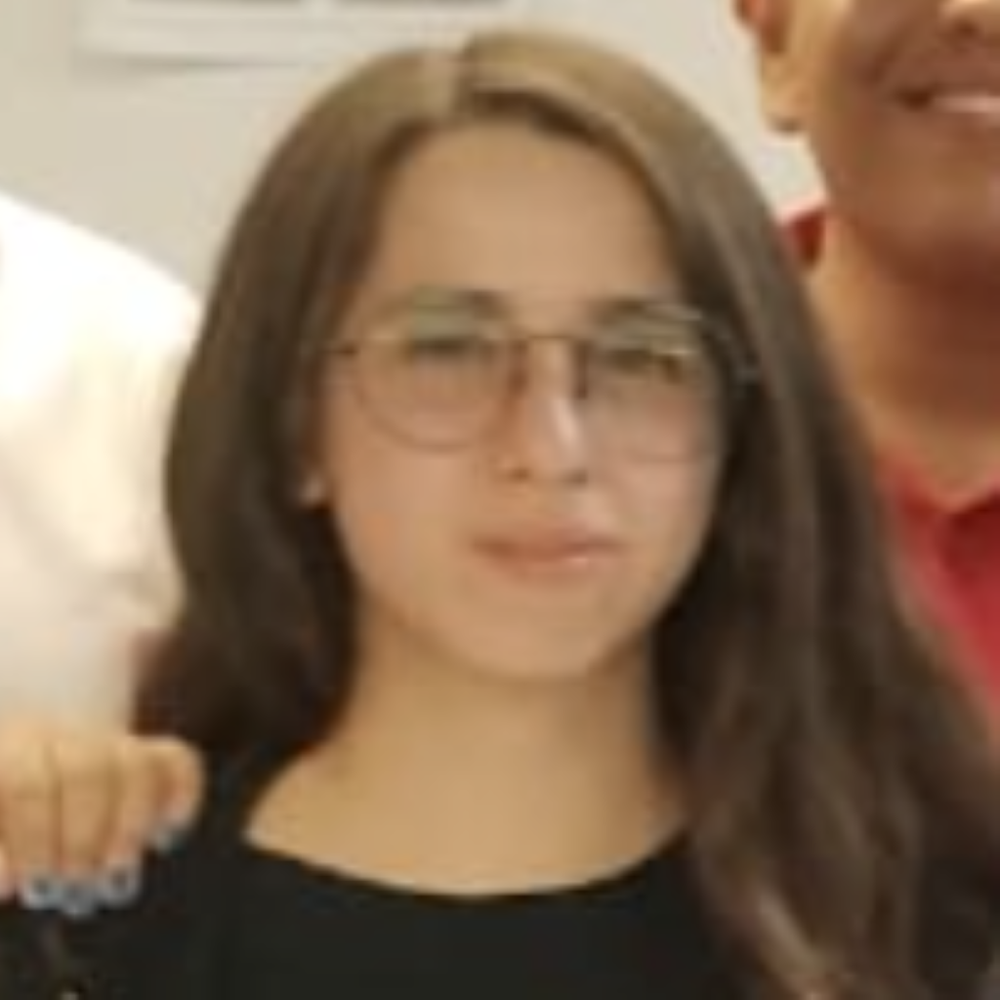
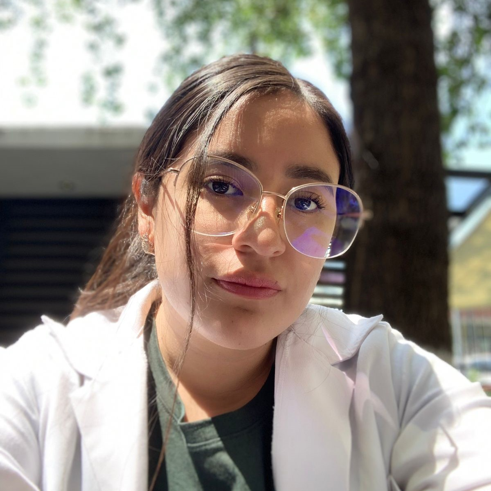
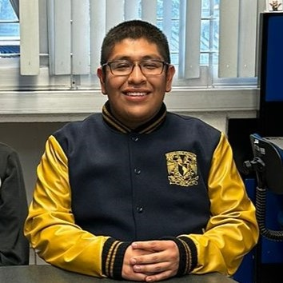

Fomento para la Creación de Materiales Docentes
Descripción general del proyecto
FOCREMDO es una iniciativa educativa que tiene como objetivo revolucionar la forma en que se crea y se comparte el material didáctico. Su misión principal es facilitar a los profesores la creación y actualización de recursos pedagógicos, con el fin de potenciar la calidad de la enseñanza.
Para el desarrollo del sitio se creó material original como videos, infografías, presentaciones y fotografías. Se utilizó el framework de front end Materialize.
Objetivos
El equipo de trabajo
| Responsable | Corresponsable | ||
|---|---|---|---|
| M. en I. Ángel César Govantes Sáldivar
Técnico Académico Asociado B de Tiempo Completo en el Departamento de Computación de la División de Ingeniería Eléctrica en la Facultad de Ingeniería, UNAM. |
M. en I. Norma Elva Chavez Rodríguez
Técnico Académico Titular B de Tiempo Completo en el Departamento de Computación de la División de Ingeniería Eléctrica en la Facultad de Ingeniería, UNAM. |
Académicos Participantes
|  | M. en I. Cruz Serguio Aguilar Díaz
Profesor de Asignatura en la División de Ingeniería Eléctrica de la Facultad de Ingeniería, UNAM. |
 | M. en I. Octavio Arenas Covarrubias
Profesor de Asignatura en la División de Ingeniería Mécanica e Industrial de la Facultad de Ingeniería, UNAM. |
| Mtra. Normal Lilis Morales García
Profesora de la Facultad de Ciencias, UNAM. |  | Ing. Carlos Alberto Román Zamitis
|
|
|  | M.A.T. Sergio Israel Franco García
Jefe de Proyectos de Cómputo de la Coordinación del Sistema de Bibliotecas de la Facultad de Ingeniería, UNAM. |
 | Ing. Paola Judith Villa Mancilla
Profesora de Asignatura en la División de Ingeniería en Ciencias de la Tierra de la Facultad de Ingeniería, UNAM. |
| Ing. Rodrigo Hernández Ordoñez
Profesor de Asignatura en la División de Ingeniería en Ciencias de la Tierra de la Facultad de Ingeniería, UNAM. | Ing. Bernardo Martell Andrade
|
Estudiantes Participantes
|  | Ana Laura Mendoza Millán
Estudiante de Ingeniería en Computación Facultad de Ingeniería, UNAM |
Axel Guiliam Salazar Montoya
Estudiante de Ingeniería Industrial Facultad de Ingeniería, UNAM. |
|
| Carolina Álvarez Rodea
Estudiante de Ingeniería en Computación Facultad de Ingeniería, UNAM. |
 | María Fernanda Mendoza Ponce
Estudiante de Física Biomédica en la Facultad de Ciencias, UNAM |
|
| Jorge Arturo Díaz Castilleja
Estudiante de Ingeniería Eléctrica-Electrónica de la Facultad de Ingeniería, UNAM |
Saul Uriel Cruz Díaz
Egresado de Diseño Industrial en la Facultad de Estudios Superiores Aragón, UNAM. |
||
| David Antonio Sánchez Ramírez
Estudiante de Ingeniería en Computación Facultad de Ingeniería, UNAM |
Luz Jackeline Anzures Gonzáles
Estudiante de Ingeniería Petrolera Facultad de Ingeniería, UNAM. |
||
|  | Emanuel López Hernández
Pasante de Ingeniería en Computación, Facultad de Ingeniería, UNAM |
Productos
-
video_libraryVideos hechos por alumnos bajo supervisión de especialistas
"Explorando la Importancia de la Arquitectura Cliente-Servidor en la Formación de Ingenieros en ComputaciónArquitectura Cliente-Servidor"
Creado por: Carolina Álvarez Rodea bajo la supervisión del Ing. Carlos Alberto Román Zamitiz.
"Introducción a la Inteligencia de Negocio"
Creado por: Axel Guiliam Salazar Montoya bajo supervisión del M.I. Octavio Arenas Covarrubias.
"FOCREMDO: Experiencias de los alumnos"
Creado por: Saul Uriel Cruz Díaz.
Eventos en el Centro de Docencia "Ing. Gilberto Borja Navarrete"
-
date_range1ra Reunión de Fomento de Creación de Materiales Docentes